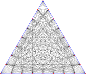
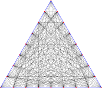
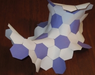
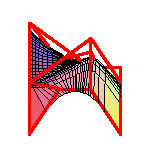
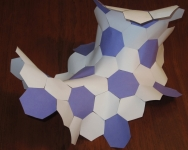
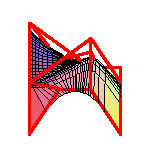

Mathematical Short Stories by Frank Sottile

 



 





Based upon work supported by the National Science Foundation and Simons Foundation
under Grants DMS-0070494, DMS-0134860, DMS-0538734, DMS-0701050, DMS-0915211, DMS-1001615,
DMS-1501370, Simons No. 636314, and DMS-2201005.
Last modified: Sat May 11 09:55:18 CST 2019